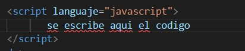
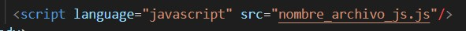
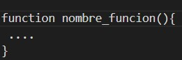
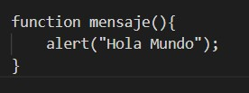

El internet cada dia va evolucionando mas y mas, por lo que JS ha ido evolucionando a lo largo del tiempo surgiendo varias versiones del estandar ECMAScript. Los navegadores pueden ser compatibles con ciertas versiones. A continuación, estas son las versiones de JS que hay en el mercado:
| TABLA DE VERSIONES JAVASCRIPT | ||||
|---|---|---|---|---|
| Version | Año de lanzamiento | |||
| Java version 8 | Marzo del 2014 | |||
| Java version 9 | 21 de septiembre del 2017 | |||
| Java version 10 | 20 de marzo del 2018 | |||
| Java version 11 | 25 de septiembre del 2018 | |||
| Java version 12 | 19 de marzo del 2019 | |||
| Java version ES12 o ECMAScript 2021 | año 2021 | |||
Para incluir codigo JavaScript dentro de una pagina HTML basta con indicarlo de la siguiente manera:
Si no, de otra forma también sería utilizar el código javascript escrito en un archivo separado. Este archivo debe tener la extensión js. En ese archivo JS solo se coloca código javascript. Luego en la página HTML se invoca al JS con la siguiente etiqueta:
Una función es un conjunto de instrucciones que se agrupan para realizar una tarea concreta y que se pueden reutilizar fácilmente. Las funciones en JavaScript se definen mediante la palabra reservada function , seguida del nombre de la función. Su definición formal es la siguiente:
El nombre de la función se utiliza para llamar a esa función cuando sea necesario. El concepto es el mismo que con las variables, a las que se les asigna un nombre único para poder utilizarlas dentro del código. Después del nombre de la función, se incluyen dos paréntesis cuyo significado se detalla más adelante. Por último, los símbolos { y } se utilizan para encerrar todas las instrucciones que pertenecen a la función (de forma similar a como se encierran las instrucciones en las estructuras if o for). Ejemplo:
expresión regular es un patrón que define un conjunto de cadenas sin enumerar todos sus elementos. Una expresión regular está formada de caracteres y metacaracteres que tienen una función definida. La principal utilidad de las expresiones regulares es la de describir un conjunto de cadenas, lo que resulta de utilidad en editores de texto y aplicaciones para buscar y manipular texto. En JavaScript existen dos formas de definir una expresión regular: mediante una cadena literal y mediante el constructor de objeto RegExp. Una expresión regular se puede aplicar a diferentes cadenas mediante expReg.test(cadena), que devuelve true si cadena cumple expReg y false en caso contrario.